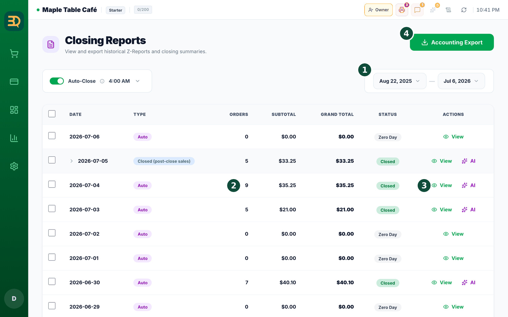
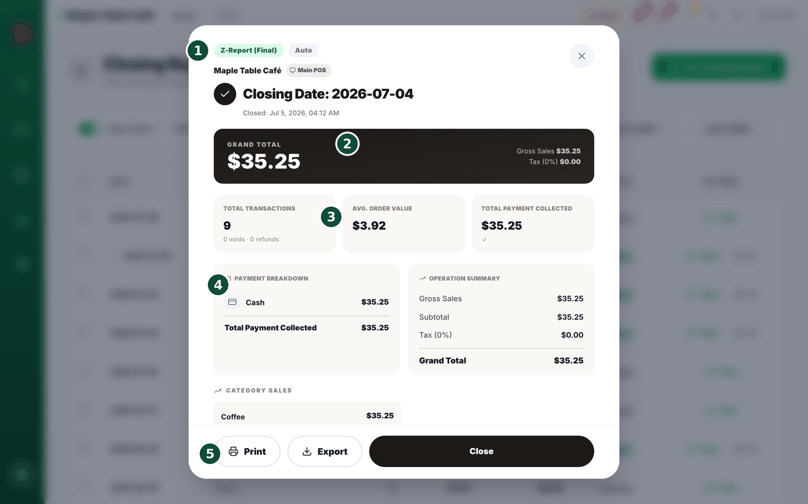
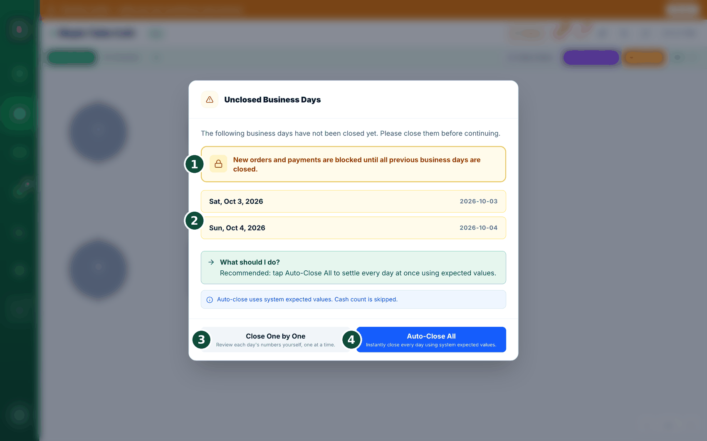
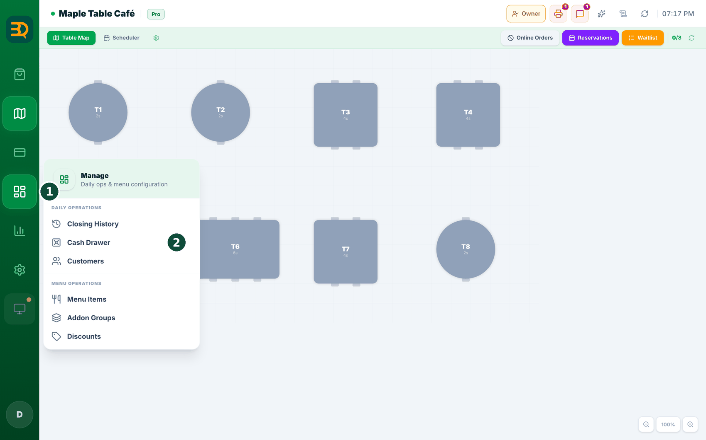
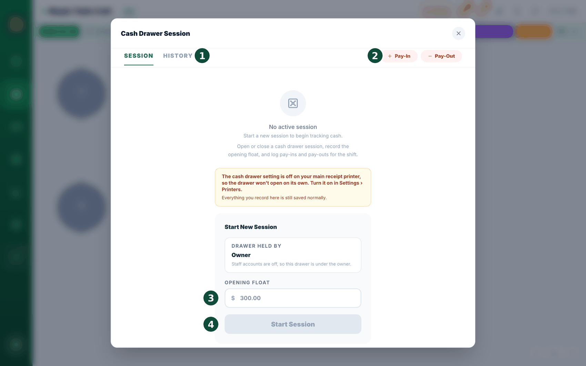

10报表与日结
每天结束时，您需要查看店铺的经营情况，并“关闭”当天，也就是日结。这样可以锁定当天的数据，确保安全。操作方法如下。



- 打开 Stats（统计，默认进入 Revenue Overview 营收概览），查看销售额、顾客的支付方式、畅销商品，以及每位员工的销售情况。
- 阅读您的 AI daily insights（AI 每日洞察，Pro 及以上套餐）。这是一份用通俗语言写成的当日简报，并附有实用建议。（Business 套餐每周还会通过电子邮件收到一份。）
- 清点钱箱里的现金，核对是否与 BrewDesk 显示的数字一致。请加上您放入的款项，并记下取出的款项。

- 现金核对无误后，进入 Manage › Closing History（该界面标题为 Closing Reports），点击 Close Now，然后在打开的窗口中点击 Close Day（日结）。这样会保存一份完整的当日汇总，称为 Z报表。
什么是日结？就是结束当天的工作并保存当天的合计数据。每晚坚持日结，可以让您的资金记录井井有条。
练习订单会被标注，而不是隐藏。正式营业之前录入的任何订单，现在在支付记录和日结记录中都带有 Sandbox data 标记："Recorded during practice mode, before this store went live."（在练习模式下录入，早于本店正式营业。）Stats 界面更进一步，直接把它们排除在统计数字之外，因此您的销售额和员工销售只反映真实营业。如果您发现合计比以前低，原因就在于此，现在的数字才是正确的。
今天发生过部分退款？Z报表会为任何部分退款以琥珀色显示一行 Refunds（退款）。该金额已经计入其下方的 Grand Total 中，这一行只是为了让您或会计能清楚地对上账。在您从 Stats 下载的分析报表（CSV）中，“Net Profit” 现已改称 Net Revenue (after tax)（税后净营收），以提醒这是营收而非利润，因为其中没有扣除商品成本。Backup & Restore 中的 Analytics Excel 文件可能仍使用旧名称。
今天送出过东西？日结汇总现在会在 Discounts 下方单独显示一行："FREE ITEMS (3)"（赠送商品 (3)），下面注明 Not deducted from total（不计入合计扣减）。赠送与打折不同：折扣是您在一笔销售上主动让出的金额，赠送则是货物被拿走而没有任何回款。把它们分开显示，您才能发现“就送一份”什么时候变成了每周二十份。
现金按最小硬币取整？如果您开启了现金收款取整，Payment Breakdown 会多出一行：Cash Rounding，就在 Total Payment Collected 下方，下面写着 "Coins not taken on cash payments. Payment Collected + this = Grand Total."（现金付款中未收取的零头。已收款项 + 此项 = 合计总额。）这一行说明了已收款项与合计总额为何不同，也是应交给会计的数字。如果未开启取整，或当天没有发生取整，这一行就完全不会出现。
取消订单一定会询问原因。无论是在日结时作废遗留的未付订单、一次性全部作废，还是在店内取消某个订单，都会弹出同样的小窗口：Wrong entry（录入错误）、Customer left（顾客离开）、Test order（测试订单）或 Other (type a reason)（其他，请输入原因）。在您选择之前，确认按钮一直是灰色的。没有原因的取消，恰恰是以后您最想问个明白的。
值得展示
用通俗的语言讲述您的数字。每日洞察会告诉您发生了什么、接下来该做什么，而不只是一页堆满的数字。
导出销售数据
一键把数据交给您的记账人员。操作方法如下。（该窗口的标题为 Backup & Restore（备份与恢复），与备份中介绍的是同一个窗口。）

- 在 Closing Reports 页面（Manage › Closing History）点击 Accounting Export（会计导出），会打开标题为 Backup & Restore 的窗口。
- 勾选要包含的内容：Closing Report Summary（日结报表摘要）、Daily Breakdown（每日明细）、All Transactions（所有交易），或现成的 QuickBooks Format / Xero Format。
- 点击 Download（下载）保存文件，或点击 Save to Drive（保存到 Drive）发送到您的 Google Drive。格式取决于您勾选的内容：Closing Report Summary 和 Daily Breakdown 为 Excel (.xlsx)；All Transactions、QuickBooks Format 和 Xero Format 为 CSV。
只有连接了 Google Drive，Save to Drive 才可用。如果窗口顶部显示 “Google Drive not connected”，请点击旁边的 Connect（连接）（见备份）。无论是否连接，Download 都可以使用。
轻松记账：这让您的记录变得简单，只需把文件交给会计即可。
迟到订单与漏结日期
日结前后有时会出现两种情况：某笔付款在您已经日结之后才到账，或者您干脆忘记了某一天的日结。BrewDesk 对这两种情况都能处理，并且绝不会更改您原来的 Z报表。
日结之后才收到付款：补充结算（Additional Closing）
- 如果您收取了一个已经日结的日期的付款，BrewDesk 会先提醒您："This business day is already closed."（该营业日已结算。）付款仍会照常完成。
- 稍后会弹出提示：Additional Closing Needed（需要补充结算）。点击 Review & Close（查看并结算），或点击 Not Now（暂不）以后再处理。
- 检查列出的迟到订单，然后点击 Confirm Additional Closing（确认补充结算）。BrewDesk 会保存一份单独的报表，名为 "Additional Closing #1"，您原来的 Z报表绝不会被改动。
需要重新打印？打开那一天的日结报表，每次补充结算都会显示为一个标记，点击即可重新打印。（补充结算只打印合计，不含支付方式或分类明细。）
您忘记了某一天的日结

- 下次打开 BrewDesk 时，会出现 Unclosed Business Days 窗口，列出您漏掉的所有日期。在这些日期结清之前，新订单和付款会暂停。
- 阅读顶部的 "What should I do?"（我该怎么做？）。最简单的选择是 Auto-Close All，它会按 BrewDesk 预期的合计一次性结清所有漏掉的日期（跳过现金清点）。
- 想逐天核对？点击 Close One by One。如果某天仍有未付订单，请先点击 Settle（结算）支付或作废它们。
结清已开的账单仍然可以。暂停的只是新的业务。已经在餐桌上的订单仍可结算，Pay Now 和 Split 仍然可用，因此您可以先收款、清掉订单，再进行日结。
显示的数字就是真实数字。如果因为还有账单未付而无法日结，提示会告诉您收银机实际在等待多少个订单，让您知道该去结清什么。
为什么要阻止新的销售？按顺序日结能保证您的合计数据真实可靠，让您的报表以及会计的数字始终对得上。
钱箱
您可以按班次核对钱箱里的现金：早上录入起始金额，记下您放入或取出的款项，下班时清点，看是否对得上。
在哪里找到
顶部的 Manage（管理）菜单 → Cash Drawer（钱箱）。只有店主和经理能看到这个菜单项。


- 开店时，点击 Start Session（开始会话），输入您放入钱箱的起始金额（starting amount）。
- 白天里，把您放入或取出的款项记为 Pay In（存入）或 Pay Out（支出），例如存银行、分发小费、补充零钱等。
- 结束时，点击 "END SESSION"（结束会话），输入您实际清点的金额。有两种方式：Enter Total（输入总额）直接填写一个总数，或 Count Denoms（按面额清点）让您输入每种纸币和硬币各有多少，由系统为您汇总。
- BrewDesk 会并排显示 Expected（预期）、Counted（已清点）和 Variance（差异）。现金销售会加入，以 Cash Refunds（现金退款）退还的款项会扣除。
- 然后点击 Close Day，钱箱数据会与其他内容一起写入当天的 Z报表。
未清点会记录为“未清点”，而不是“零差异”。如果您不输入任何内容就结束，BrewDesk 不会凭空编出一个零差异，而是写下 "Cash wasn't counted."（未清点现金。）日后回看时，“账平了”和“根本没人清点”就不会看起来一样。
钱箱没有自动弹开？屏幕会告诉您原因：① 尚未设置小票打印机，② 主小票打印机上的钱箱设置已关闭（请在
Settings › Printers 中开启），或 ③ 此设备是副收银机。无论哪种情况，您的数据仍会被记录。如果仍有未付订单，BrewDesk 在结束钱箱会话之前会再询问一次：“N unpaid order(s) still open for today. End the drawer session anyway?”（今天仍有 N 个未付订单。仍要结束钱箱会话吗？）这样可以避免您在还有账单待结时就把钱箱结掉。
在日结之前先结束钱箱会话也可以。先清点，点击 END SESSION，再进行 Close Day。您清点的金额和差异仍会显示在日结报表和打印件中。
未结束的钱箱现在会让当天保持未结。如果钱箱会话仍在进行，Close Day 按钮会变灰，并出现一行红字："N cash drawer session(s) still open — count and end the drawer to close the day."（仍有 N 个钱箱会话未结束，请清点并结束钱箱后再日结。）日结意味着款项也已结清，所以 BrewDesk 不会让您为一个没人清点的钱箱签字结账。
解决办法就在旁边。在该提示旁边有一个 Open drawer（打开钱箱）按钮，点击它，清点现金，点击 END SESSION，Close Day 按钮就会恢复可用。您不必在各级菜单中到处寻找出路。
有人没结束钱箱就下班了？钱箱界面会显示 "N cash drawer(s) were never closed"（有 N 个钱箱从未结束）："Someone left without ending the drawer. You cannot count it now, so closing it here records it as not counted — no number is invented."（有人没有结束钱箱就离开了。您现在无法清点，因此在此关闭将记为未清点，不会编造任何数字。）点击 Close without counting（不清点直接关闭）即可继续。当天会如实记为 "Cash wasn't counted"，而不是一个看似整齐的零。
先清点，数字随后才出现。在您输入清点金额之前，BrewDesk 会隐藏预期总额（以及构成它的现金销售和现金退款行），取而代之的是 "Shown after you enter what you counted"（输入实点金额后显示），下方还有 "Count the drawer first, then the numbers appear. This is so the count stays a count."（请先清点钱箱，数字才会出现。这样清点才是真正的清点。）您的起始金额以及存入、支出记录会一直显示，因为这些是您自己操作的，没有什么需要隐藏。
如果钱对不上，必须写一行说明。当差异不为零时，BrewDesk 会询问 "Why is it different?"（为什么会有差额？），在那里写下内容之前不允许您关闭钱箱（空格不算）。它提醒您："Write one line before closing. In three days nobody will remember."（关闭前请写一行说明。三天后没人会记得。）这话没错。如果差异为零，则完全不会询问。
钱箱归谁，是选出来的，不是打出来的。原先的自由输入姓名框已取消。如果您使用员工账户，请在 Drawer held by（钱箱负责人）下从列表中选择负责人。如果您不使用员工账户，这里就直接显示 Owner（店主）："Staff accounts are off, so this drawer is under the owner."（员工账户已关闭，因此该钱箱归店主负责。）存入或支出上的 Recorded by（记录人）框现在是只读的，并与同一人保持一致，因此“谁取走了那笔钱”永远只有一个答案。
从钱箱里拿钱采购物资？Pay-Out 现在增加了 Business expense（业务支出）这一原因，与 Safe Drop、Tip Out、Bank Drop 和 Other 并列。给它单独设一个原因，月底时您就能真正算清现金花到了哪里。
起始金额输错了？在尚未发生任何事情（没有现金销售、存入或支出）时，会出现 Fix opening float（更正备用金）按钮。第一笔现金销售之后它就会消失，因为那时再修改起始数字，会悄悄地把真实的差异转移到别处。从那时起，请在日结时的差异原因中说明。更正会以备注形式添加（谁、何时、旧数值），绝不会覆盖原始记录。
一条无法关闭的红色横幅。如果钱箱的更改没有传到服务器，您会看到 "This drawer has not been saved"（这个钱箱尚未保存）："The last change did not reach the server. If you refresh now, the float, pay-ins and count are gone. Check the network and make any change again."（上次更改未能传到服务器。如果现在刷新，备用金、存入和清点数据都会丢失。请检查网络并重新进行一次更改。）这里特意没有关闭按钮。一条可以划掉的提示很容易被忘掉，而刷新页面会丢失当天的钱箱数据。